Movilidad
Los referentes de movilidad se usaran para comenzar a plantear el tema específico que desarrollare como proyecto pensando la movilidad del futuro en base a las alteraciones que ha generado el COVID19 a nuestro modo de vida contemporánea.
Plantearse preguntas de cómo se podría abordarse la problemática de la movilidad, en el amplio sentido Pensando en escenarios de emergencia como los que vivimos hoy en día.
- La cadena logística para el abastecimiento
- Los vehículos para una nueva movilidad
- Como serian las relaciones sociales
Referentes
1. Personas/usuarios
En casos de pandemias futuras y otros, es necesario un transporte eficiente, rápido y salubre. Es por esto por lo que decidí mezclar y ajustar estos proyectos
- Tranporte en frascos
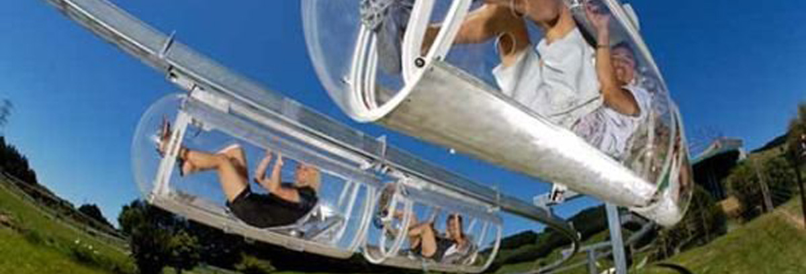
Transporte personal, ideal para momentos donde es necesario la aislación social, y cabe destacar que es un transporte autónomo ya que funciona como una bicicleta, permitiendo realizar deporte y liberar estrés al mismo tiempo.
Al ser transparente este podría no solo usarse para llegar a los lugares requeridos sino que también para dar paseos y descansar seguramente un tiempo del encierro requerido en estados de cuarentenas y otros.
- Hyperloop
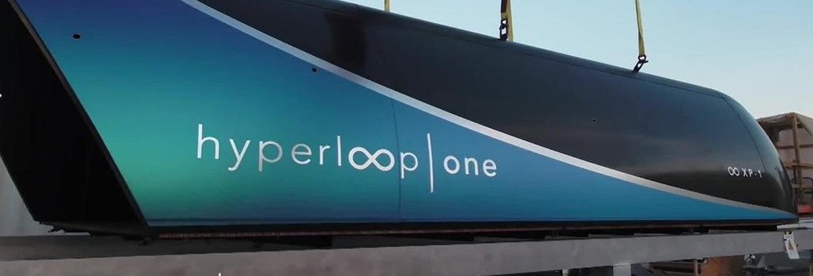
Consiste en un sistema de transporte basado en “cápsulas Hyperloop” con capacidad para transportar en cada una entre 28 y 40 pasajeros. Dichas cápsulas circularán sobre levitación electromagnética a baja presión y dispondrán de una longitud de 30 metros, un diámetro de 2,7 metros y un peso de 20 toneladas. Esto podría ser una alternativa de transporte para personas con algún tipo de discapacidad que le impida el uso de los frascos como también personas de edad mayor al no necesitar nada más que energía.
Al mezclar el frasco, su formato, y la mecánica de Hyperloop se podría crear un medio mucho mejor y aptos para circunstancias como las vividas hoy en día. Daria la posibilidad de transportase a toda la sociedad, además de la oportunidad de descansar y desahogarse dando un “paseo” con la seguridad de que se resguardara su salud en todo momento. Sin contar claro con la oportunidad de realizar transporte en un lugar que no sea monótono como lo es el interior de las casas de los usuarios.
2. Emergencias/salud
Apto para todo terreno, eficientes y que permitan hacer operaciones o llevar herramientas necesarias para los diferentes servicios de emergencia
- Vehículo giroscópico
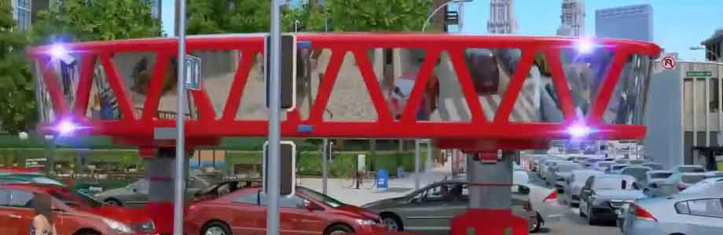
camión de bomberos, ambulancias, policía podrían sustituirse con este diseño de vehículos giroscópicos. Permite un acceso rápido a cualquier parte de la ciudad. independientemente de las condiciones de la carretera, si hay atascos, el automóvil simplemente se eleva sobre el tráfico con patas telescópicas y se mueve entre las filas de automóviles”. Son amplios teniendo el potencial para tener y transportar de forma funcional las herramientas necesarias paras los servicios respectivos.
- Elevate
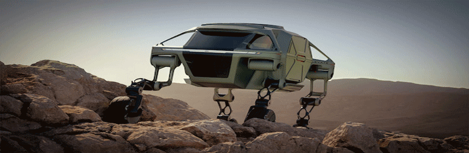
Hyundai dio a conocer su concepto para un automóvil andante llamado Elévate, el vehículo tendría patas robóticas extensibles, lo que le permitiría negociar terrenos peligrosos e irregulares. El fabricante de automóviles de Corea del Sur afirma que el vehículo podría ayudar a los trabajadores de emergencia a rescatar a las personas en áreas de difícil acceso, además de ser adecuado para su uso en las ciudades. Con sus largas patas robóticas, el Elévate está diseñado para conducir, caminar o escalar el terreno más traicionero, al que los vehículos normales no pueden acceder. Lo más emocionante de este proyecto es que no solo tienen capacidad para ayudar en emergencias, sino que también para adaptarse para personas discapacitadas, aproximándose a ellos sin necesitar de sus esfuerzos o rampas), como también podrá modificarse levemente para usase en exploraciones en el espacio, en visitas a diversos planetas que muchas veces cuentan con suelos duros o irregulares.
- Baymax
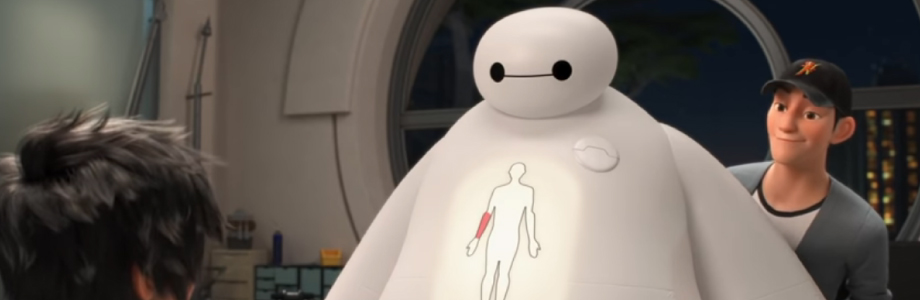
En caso, como sucede en la actualidad, las personas que realizan los servicios de emergencia, de salud, sanitarias, entre otras no den abasto es necesario un sustituto que además de ser efectivo en lo técnico de dicha tarea también sea sensible y capas de aprender sobre su entorno para poder ayudar de forma adecuada a las personas tanto en un caso de emergencia como en situaciones tensas como el encierro debido al covid-19. Baymax es un ejemplo de esto, a pesar de ser ficticio, gracias a las innovaciones y estudios que se han hecho y se llevan a cabo, da la impresión de estar cerca de poder lograr algo similar como la lectura de gestos faciales (https://www.youtube.com/watch?v=6LfE3mQzLNY&feature=emb_logo), escáner de alta resolución, etc.
- Black Panther
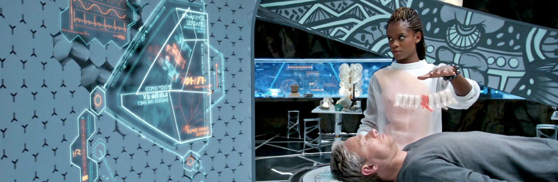
La tecnología cada vez va avanzando de forma más exponencial y no evitar pensar que podríamos llegar a tener la tecnología necesaria para obtener módulos para estabilizar y estudiar la situación respectivamente de salud de los individuos en la comodidad de sus casas, tal como también se da a ver en la película Elysium para así evitar la salida innecesaria las casas y el colapso de los servicios de salud.
Si al vehículo giroscópico se le pudieran instalar las patas robóticas para hacerlo apto no solamente a la ciudad como tal si no que también a zonas rocosas, acuáticas y otras que signifiquen un peligro o complicación para otros medios de transporte. Igualmente es vital que no solo el transporte sea el adecuado y eficiente, sino que también la persona u objeto que realice la tarea a su vez lo sea y no solo en el lado técnico, sino que incluso en lo emocional.
3. Comercios
Apto para todo terreno y clima, sin afectar la calidad y el estado del producto, eficiente como también barato para no afectar a los negocios y su clientes frecuentes
- Drones
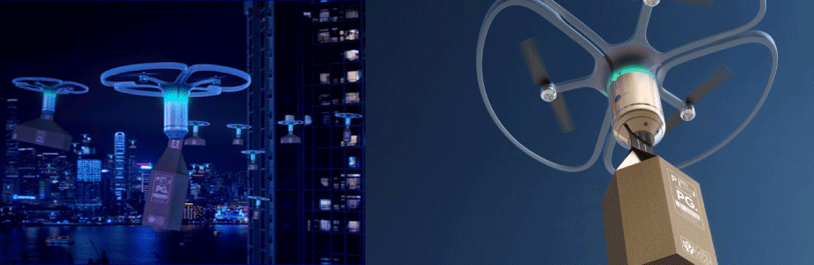
Prototipo de delivery a través de drones. Entregas sin restricciones mediante el espacio aereo evitando la circulación de personas, a parte de ser mas rápido y efectivo y menos contaminante.
- Robot Delivery Dog
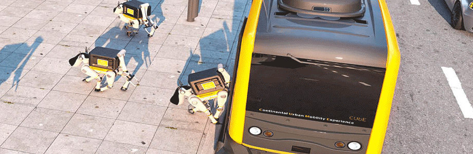
Este perro robótico, que te entrega tus paquetes directamente a su puerta, fue hecho por la compañía automotriz alemana Continental. No puedo evitar pensar en sustituir en zonas rurales animales de carga con este perro robótico ya que podría llevar elementos pesados y podría ajustarse para zonas rocosas o complejas.
- Roxo
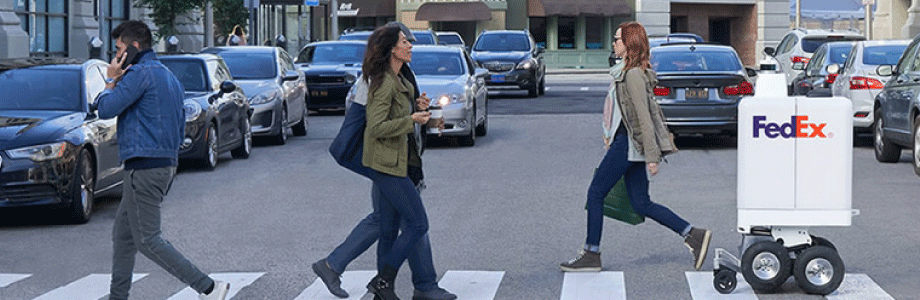
Imaginate recibir tu paquete el mismo día que realisaste la compra, pues el robot Roxo de Fedex entregara el paquete el mismo día gracias a sus 6 patas, dos pequeñas y 4 grandes con tracción; consiguiendo así desplazarse por diversas superficies, tomar curvas, entre otros. y además cuenta con paneles de visualización delanteros y traseros.
- Supermercado del futuro
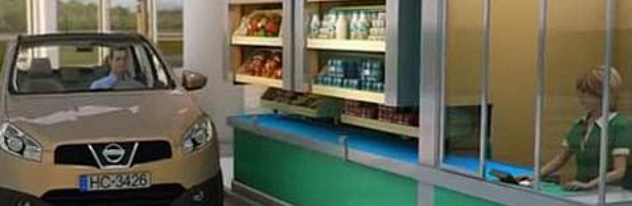
El inventor ruso Semenov Dahir Kurmanbievich presento la patente de un supermercado con autoservicio en el que podríamos hacer la compra sin ni siquiera salir del coche. El cliente, que entra al establecimiento con su vehículo, solo tiene que aproximarse a los estantes y seleccionar los productos que desean. Un mecanismo automatizado pone en marcha una serie de complejos resortes y los productos son llevados, a través de una cinta transportadora, hasta la caja. Finalmente, es tan fácil como recoger la compra y pagar.
Estos sistemas serían de mucha ayuda para evitar el exceso de personas en las calles y de medios de transporte en carreteras y calles o porlomenos evitar el contacto teniendo la distancia del mismo medio de transporte en el caso del supermercado. Pueden adquirir sus productos variados sin la necesidad de un mensajero humano evitando así accidentes innecesarios, propagación de bacterias y virus, y elementos dañinos para la sociedad como drogas y armas.
4. Cuerpo
Apto para todo terreno y clima, sin afectar la calidad y el estado del producto, eficiente como también barato para no afectar a los negocios y su clientes frecuentes
- Zapatillas ecoamigables
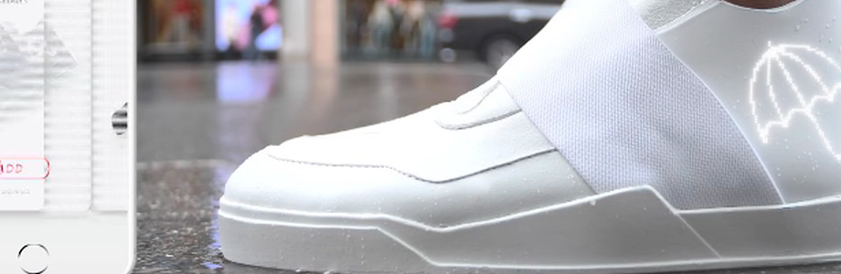
100% reciclables creadas con un ciclo completamente cerrado. Biofibras de algas que pueden hacer que las zapatillas crezcan, así se reduce la compra constante de nuevas zapatillas debido a cambios de talla. En cuanto a los estados de emergencia los pasos serán rastreados gracias a las zapatillas. De esta manera se llevará un mapa de los pasos que cada persona da pudiendo controlar el aglomeraciones en sonas pequeñas o de riesgo, encontrar personas extraviadas e incluso obtener datos como donde es mas necesario medios de transportes u otros.
- Traje Z-2
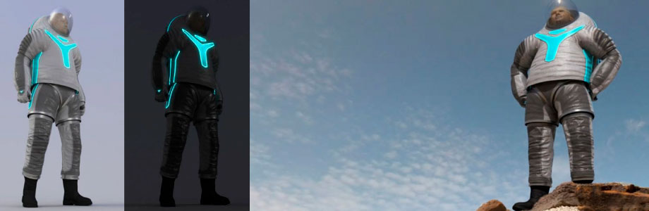
Diseñado por la empresa ILC Dover y la Universidad de Filadelfia. Es un prototipo de traje para los astronautas que participen en la misión a Marte. No solo destaca por el toque futurista que aportan los paneles de iluminación: la NASA afirma que será un traje que brindará comodidad y protección al astronauta. Los trajes de astonautaus normalmente son pesados devido a las necesidades de cada misión, si este es mas ligero e igual de hermetico podria usarse para poder transitar en casos como pandemias o lugares muy contaminados en nuestro planeta.
- Traje Ripple
El diseño está dirigido a las personas con discapacidad, este les ayudara a satisfacer sus necesidades sexuales con una herramienta de masturbación de tres partes que incluye un traje, una máscara y un control remoto. El kit este hecho para personas con limitaciones funcionales de moderadas a severas, que requieren cuidadores para ayudarlos en las tareas cotidianas. Funciona para estimular todos los sentidos, incluidos el tacto, la vista, el sonido y el olfato, a través de tres objetos diferentes: un traje de cuerpo acolchado e inflable, un control remoto con un receptor y una máscara para los ojos con auriculares, que también libera feromonas.
El kit es individual para la privacidad de la persona y también para ayudar su tranquilidad y placer. Este podría usarse de forma más masiva para evitar el contacto con sus parejas en estos momentos, debido al covid-19, aislados y distanciados. Además, el efecto de la sensación de tacto y calor podría servir incluso como un tipo de terapia tanto para problemas psicológicos como físicos (enfermedades). Ser libre sexual mente es algo que hoy en día cada vez más añorado y exigido actualmente.
- Ballie
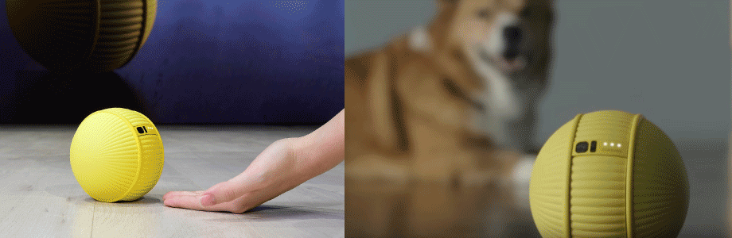
Samsung lanzo un robot Ballie, este ayuda con distintas tareas en la casa, tales como levantar a la persona, encender la aspiradora cuando es necesario, entretener a una mascota, y hacer compañía. Este podría ser de gran ayuda para las personas que actualmente y en otras situaciones se ven obligados a vivir por cierto tiempo aislados o que requieren ayuda con ciertas tareas, en especial a personas de mayor edad o con enfermedades psicológicas tales como la depresión para hacer más agradable el pasar del tiempo.
El cuerpo tambien se ve afectado en momentos de crisis, tanto fisica como psicologica, es por ello que cualquier herramienta que sirva para calmar, satisfacer, alegrar al usuario es de alta importancia. Saber donde y cuando estan las personas como una mejor aislacion social y momentos de gose personal son vitales para una buena salud.
En conclusión